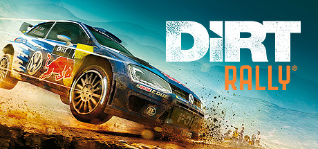
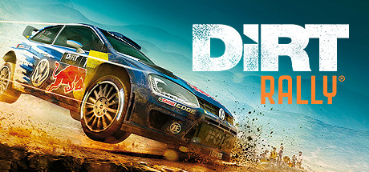

Nemokami žaidimai online - zaidimai24.eu
2020.10.29 12:36

× Žaidimai Highscore žaidimai Imitavimas Išradingumas žaidimai Lenktynių žaidimai Nuotykių žaidimai RPG žaidimai Sporto žaidimai Stalo žaidimai Vaikams žaidimai Veiksmo žaidimai TOP žaidimai zaidimai24.eu
Nemokami žaidimai online
Nuobodu? Ateik ir žaisti geriausias nemokamai žaidimai internete. Mes rasite platų žaidimai - vaikų žaidimai, Šaudymo žaidimai, kortų žaidimai, dėlionės, stalo žaidimai ir daug kitų internetinių žaidimų. Yra daugiau nei 4000 žaidimų!
Visi žaidimai TOP žaidimai
Highscore žaidimai 5 Imitavimas 338 Išradingumas žaidimai 860 Lenktynių žaidimai 307 Nuotykių žaidimai 1025 RPG žaidimai 222 Sporto žaidimai 387 Stalo žaidimai 127 Vaikams žaidimai 23 Veiksmo žaidimai 899TOP žaidimai
Fruits and Vegetables
Bubble Shooter
Dream Pet Link
Spider Solitaire
Shangai Dynasty
Car Logo Puzle
Gold Strike
Bejevell
Gem Mine
Fruit Legend Elimination
Lines
Popstar
Billiards
Mahjongg Alchemy
Mah Jongg
Go Go Goblin 2
Dolphin Pop
Kings Rush
Bubbles Game
Mind Your Marbles
Fruits and Vegetables 2
Defend Your Nuts
Snail Bob 5 Love Story
Solitare
Kita žaidimo
Popstar
Bubble Shooter
Gem Mine
Fruit Legend Elimination
Flash Chess
Bejevell
Solitare
Dolphin Pop
Fruits and Vegetables
Car Logo Puzle
Gold Strike
Mind Your Marbles
Snail Bob 5 Love Story
Jewel Quest
Goldminer
Go Go Goblin 2
Kings Rush
Billiards
Mahjongg Alchemy
Fruits and Vegetables 2
Bubbles Game
Elsa Magic Rescue
Dream Pet Link
Shangai Dynasty
Kartu su mumis
Tweets by @zaidimai24Nemokami žaidimai
Sveiki atvykę į zaidimai24.eu, pirmaujanti interneto žaidimai svetainę, kur galite žaisti daugybę nemokamus internetinius žaidimus, įskaitant veiksmų žaidimai, sporto žaidimai, puzzle žaidimai, žaidimai mergaitėms, žaidimai vaikams, žaidimai ir daug daugiau.
Online žaidimai
Internetinis žaidimas yra video žaidimas, žaidžiamas per kai kompiuterių tinklo forma, naudojant asmeninį kompiuterį, vaizdo žaidimų konsolės ar delninis žaidimų konsolės.Interneto azartinių lošimų plėtra atspindi bendrą plėtros kompiuterinius tinklus iš mažų vietinių tinklų prie interneto ir interneto prieigos pati augimą. Online žaidimai gali svyruoti nuo paprasto teksto pagrindu aplinkoje su žaidimais, kuriuose sudėtingus grafika ir virtualių pasaulių, kuriame gyvena daug žaidėjų vienu metu. Daugelis internetinių žaidimų susijęs internetinių bendruomenių, todėl žaidimai socialinės veiklos formos ne tik vieno žaidėjo žaidimų. Retro ar klasikinių interneto žaidimai leis tiek suaugusiems ir vaikas žviegimas iš džiaugsmo ir jie mėgsta žaisti juos vėl ir vėl. Tuo žaidimai 24 rasite gražus atrankos sporto žaidimai, pavyzdžiui, baseinas, futbolo ar golfą. Pažvelkite Multiplayer žaidimai skyriuje išvaizdą žaisti žaidimus su draugais ir kalbėtis. Mūsų katalogas yra visiškai suderinti su įdomus ir kietas žaidimų. Pasukti ryškiausią protus mes turime keletą dėlionės ir platforma žaidimus, pakelsiu savo žvalgybos jos ribos. Jei manote, kad jums buvo tikėtina, kandidatas Grand Prix, pabandykite savo rankas deginimas juostomis su lenktynių ir vairavimo žaidimų, tokių kaip 3D Racing. Kai kurie iš populiariausių naikintuvų žaidimai yra tie, kurie teminius ant karatė ir bokso. Tai beat em up žaidimai leis vaikams žviegimas iš džiaugsmo, ir kad suaugusiųjų kovoti su dėl to veiksmo gabalas vaikams. Tuo zaidimai24.eu jūs galite žaisti tūkstančius nemokamų žaidimų, pavyzdžiui, veiksmo žaidimai, ir jie bus pripumpuoti savo adrenalino, o tu žaidi cool naršyklės pagrindu žaidimai. Laiko žaisti įdomius žaidimus!
© zaidimai24.eu 2014 - 2020. Visos teisės saugomos.
Spēles Mängud Žaidimai
- Kompiuteriniai žaidimai - Knygos.lt
- Nemokami žaidimai online - zaidimai24.eu
- Kompiuteriniai žaidimai. PC, Xbox One, Nintendo Switch ...
- KOMPIUTERINIAI ŽAIDIMAI ČIA! | 1A.LT
- Žaidimai - Zaidimai.lt
- Kompiuteriniai žaidimai | Kompiuterinis žaidimas - Topocentras
- Kompiuteriniai žaidimai | Spacebar.gg
- Loginiai žaidimai
- Programinė įranga, kompiuteriniai žaidimai skelbimai ...
- Kompiuteriniai žaidimai programinė įranga, žaidimai ...
- Kompiuteriniai žaidimai - Knygos.lt
Kompiuteriniai (PC) žaidimai. Vilnius. Parduoda. prieš 1 D. Naujos neispakuotos antivirusines 2012-2013 metu, leidzia. 10 € ...
- Nemokami žaidimai online - zaidimai24.eu
Kompiuteriniai žaidimai gali įtraukti, pralinksminti, lavinti vaizduotę, padėti atsipalaiduoti ir netgi suteikti progą rasti draugų bei bendraminčių internete! Mes siūlome itin platų žaidimų pasirinkimą tiek žanrų atžvilgiu, tiek žaidimų platformų atžvilgiu. Kompiuteriniai žaidimai priklauso tam tikroms platformoms:
- Kompiuteriniai žaidimai. PC, Xbox One, Nintendo Switch ...
Kompiuteriniai žaidimai pritaikyti įvairiam amžiui: nuo pačių mažiausių iki didžiausių. Xbox, Nintendo, Sony Playstation (PS3 ir PS4) ir kitų kompiuterių žaidimų pasirinkimas itin didelis: strateginiai, lenktynių, kariniai, veiksmo, šokių temomis.
- KOMPIUTERINIAI ŽAIDIMAI ČIA! | 1A.LT
Kompiuteriniai žaidimai, Jennifer Moore-Mallinos / Šviesa 2017 / ISBN: 9785430067892. Didelis knygų pasirinkimas ir visada gera kaina. Nemokamas pristatymas į mūsų atsiėmimo punktą arba perkant nuo 26 €.
- Žaidimai - Zaidimai.lt
Kompiuteriniai žaidimai lavina mažųjų mąstymą, kuris jiems pravers ateityje. „Vaizdo žaidimai keičia jūsų smegenis“, – sako Viskonsino universiteto psichologas C. Shawn Green. Žaidžiant pasikeičia smegenų fizinė struktūra, taip pat kaip mokantis skaityti, groti muzikos instrumentu ar orientuotis žemėlapiuose.
- Kompiuteriniai žaidimai | Kompiuterinis žaidimas - Topocentras
Kompiuteriniai žaidimai Žaidimų biblioteka... Kiekvienas žaidėjas turi daugybę žaidimų, kurie laukia savo eilės ilgame „būtinai reikia pereiti“ sąraše, o pasiteisinimas, kurio griebiamasi išgirdus klausimus apie nežaidžiamus žaidimus – „bibliotekoje irgi ne visos knygos skaitomos“.
- Kompiuteriniai žaidimai | Spacebar.gg
Nemokami žaidimai Sveiki atvykę į 321zaidimai.lt, pirmaujanti interneto žaidimai svetainę, kur galite žaisti daugybę nemokamus internetinius žaidimus, įskaitant veiksmų žaidimai, sporto žaidimai, puzzle žaidimai, žaidimai mergaitėms, žaidimai vaikams, žaidimai ir daug daugiau.
- Loginiai žaidimai
KOMPIUTERINIAI ŽAIDIMAI 1C, 2K Games, 505 Games... Žemos kainos garantija. NEMOKAMAI atsiimk vienoje iš 16 Varle.lt parduotuvių.
- Programinė įranga, kompiuteriniai žaidimai skelbimai ...
Kompiuteriniai žaidimai iš tiesų gali leisti smagiai praleisti laiką, tad visada galima pasirinkti tokius žaidimus, kurie jums patiktų labiausiai. Tereikia atkreipti dėmesį į keletą svarbiausių kriterijų, ir tai tikrai leis atrasti pačias tinkamiausias prekes.
- Kompiuteriniai žaidimai programinė įranga, žaidimai ...
Nsw Kompiuteriniai žaidimai ir konsolės Kaune PARDUOTUVĖ KAUNE I 10:00 - 18:30 II - V 10:00 - 22:00 VI 12:30 - 19:00 VII Nedirbame Savanorių pr. 246, LT-50199 Kaunas Tel.: +370 602 64441 (LT/EN) www.gameroom.lt
Kompiuteriniai (PC) žaidimai. Vilnius. Parduoda. prieš 1 D. Naujos neispakuotos antivirusines 2012-2013 metu, leidzia. 10 € ...
Kompiuteriniai žaidimai gali įtraukti, pralinksminti, lavinti vaizduotę, padėti atsipalaiduoti ir netgi suteikti progą rasti draugų bei bendraminčių internete! Mes siūlome itin platų žaidimų pasirinkimą tiek žanrų atžvilgiu, tiek žaidimų platformų atžvilgiu. Kompiuteriniai žaidimai priklauso tam tikroms platformoms:
Kompiuteriniai žaidimai pritaikyti įvairiam amžiui: nuo pačių mažiausių iki didžiausių. Xbox, Nintendo, Sony Playstation (PS3 ir PS4) ir kitų kompiuterių žaidimų pasirinkimas itin didelis: strateginiai, lenktynių, kariniai, veiksmo, šokių temomis.
Kompiuteriniai žaidimai, Jennifer Moore-Mallinos / Šviesa 2017 / ISBN: 9785430067892. Didelis knygų pasirinkimas ir visada gera kaina. Nemokamas pristatymas į mūsų atsiėmimo punktą arba perkant nuo 26 €.
Kompiuteriniai žaidimai lavina mažųjų mąstymą, kuris jiems pravers ateityje. „Vaizdo žaidimai keičia jūsų smegenis“, – sako Viskonsino universiteto psichologas C. Shawn Green. Žaidžiant pasikeičia smegenų fizinė struktūra, taip pat kaip mokantis skaityti, groti muzikos instrumentu ar orientuotis žemėlapiuose.
Kompiuteriniai žaidimai Žaidimų biblioteka... Kiekvienas žaidėjas turi daugybę žaidimų, kurie laukia savo eilės ilgame „būtinai reikia pereiti“ sąraše, o pasiteisinimas, kurio griebiamasi išgirdus klausimus apie nežaidžiamus žaidimus – „bibliotekoje irgi ne visos knygos skaitomos“.
Nemokami žaidimai Sveiki atvykę į 321zaidimai.lt, pirmaujanti interneto žaidimai svetainę, kur galite žaisti daugybę nemokamus internetinius žaidimus, įskaitant veiksmų žaidimai, sporto žaidimai, puzzle žaidimai, žaidimai mergaitėms, žaidimai vaikams, žaidimai ir daug daugiau.
KOMPIUTERINIAI ŽAIDIMAI 1C, 2K Games, 505 Games... Žemos kainos garantija. NEMOKAMAI atsiimk vienoje iš 16 Varle.lt parduotuvių.
Kompiuteriniai žaidimai iš tiesų gali leisti smagiai praleisti laiką, tad visada galima pasirinkti tokius žaidimus, kurie jums patiktų labiausiai. Tereikia atkreipti dėmesį į keletą svarbiausių kriterijų, ir tai tikrai leis atrasti pačias tinkamiausias prekes.
Nsw Kompiuteriniai žaidimai ir konsolės Kaune PARDUOTUVĖ KAUNE I 10:00 - 18:30 II - V 10:00 - 22:00 VI 12:30 - 19:00 VII Nedirbame Savanorių pr. 246, LT-50199 Kaunas Tel.: +370 602 64441 (LT/EN) www.gameroom.lt

 
